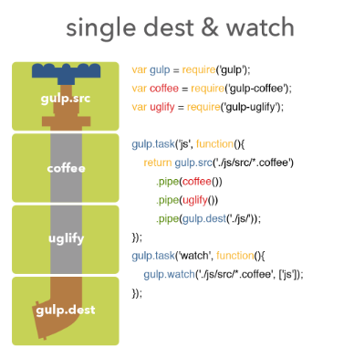

Gulp
Gulp là một build system, có nghĩa là bạn có thể sử dụng nó để tự động hóa các công việc thông thường trong quá trình phát triển Website.
Ví dụ bạn có thể tự động các công việc sau:
- Compile LESS ra file CSS
- Minify
- Concat
- JShint
- Image compressed
- Unit test
- Tự động refresh trình duyệt khi có thay đổi
Bắt đầu
Cài đặt gulp toàn cục
$ npm install --global gulp
Nếu bạn đã cài đặt một phiên bản của gulp toàn cục, bạn có thể xóa nó như sau bằng lệnh npm rm --global gulp.
Cài đặt Gulp cho từng dự án
$ npm install --save-dev gulp
Chúng ta phải cài đặt cả toàn cục và cho từng dự án.
Tạo một file gulpfile.js ở thư mục gốc của dự án:
var gulp = require('gulp');
gulp.task('default', function() {
console.log('Hello Gulp');
});
Chạy gulp:
$ gulp
Cơ chế hoạt động
Gulp hoạt động theo cơ chế pipe line (kiểu đường ống).
Nhìn hình bạn có thể hiểu:
- Đầu tiên sẽ của đầu vào gọi là source tương ứng với gul.src
- Sau đó qua các bộ xử lý (ví dụ như coffee(), uglify() như trong hình)
- Cuối cùng ta được đầu ra gọi là destination tương ứng với gul.dest.
Ngoài ra thì nó còn có thể tạo ra đường ống nhưng với nhiều đầu ra bằng các tạo ra nhiều gulp.dest().
Định nghĩa task
Để định nghĩa 1 task, sử dụng function gulp.task(). Khi định nghĩa một task đơn giản, function này cần 2 thuộc tính: tên của task và một function dùng để chạy.
gulp.task('greet', function() {
console.log('Hello world!');
});
Khi chạy gulp greet sẽ nhận được kết quả là Hello world! được in ra trong console.
Một task cũng có thể gồm nhiều task khác. Khi muốn định nghĩa một task nhằm chạy 3 task khác css, js, imgs, chúng ta có thể quy định một mảng các tasks:
gulp.task('build', ['css', 'js', 'imgs']);
Chú ý là các task trên sẽ chạy không đồng bộ, có nghĩa là bạn không thể chắc chắn rằng task css sẽ chạy xong khi task js bắt đầu được. Để đảm bảo rằng một task được chạy sau khi một task khác chạy xong chúng ta có thể làm như sau:
gulp.task('css', ['greet'], function() {
// Deal with CSS here
});
Task css sẽ được chạy ngay sau khi task greet hoàn thành.
Task mặc định
Bạn có thể định nghĩa một task mặc định khi chạy gulp với task name là default:
gulp.task('default', function() {
// Your default task
});
Sau đó ta chạy lệnh:
gulp task_name
Để chạy task theo ý muốn hoặc chỉ cần gọi lệnh gulp để chạy task mặc định default. Chúng ta cũng có thể chạy nhiều task cùng lúc bằng cách gõ thêm tên các task phía sau:
gulp task_a task_b other_task
gulp.src
Gulp sử dụng Node-glob để lấy file từ glob hoặc globs đã được chỉ định. Cách sử dụng rất dễ dàng:
| js/app.js | Tìm chính xác file |
| js/*.js | Tìm kiếm tất các file kết thúc bằng .js và nằm trong thư mục js |
| js/**/*.js | Tìm kiếm tất cả các file kết thúc bằng .js ở trong thư mục js/ và tất cả thư mục con của nó |
| !js/app.js | Tìm kiếm tất cả các file trong thư mục ngoại trừ file app.js |
| *.+(js|css) | Tìm kiếm tất cả các file trong thư mục root có đuôi là .js và .css |
Những ví dụ trên là những ví dụ thông thường nhất được sử dụng trong Gulp. Nếu bạn muốn sử dụng nhiều hơn, tham khảo Minimatch. Nếu muốn thêm điều kiện để lấy files, chỉ cần kết hợp các điều kiện bên trong một mảng:
gulp.src(['js/**/*.js', '!js/**/*.min.js'])
Danh sách plugin
Có nhiều plugin để bạn khám phá.
https://techtalk.vn/gulp-cho-nguoi-moi-bat-dau.html